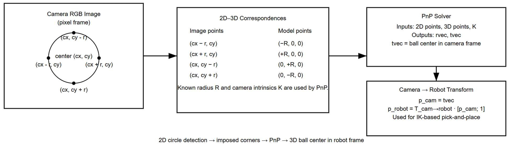
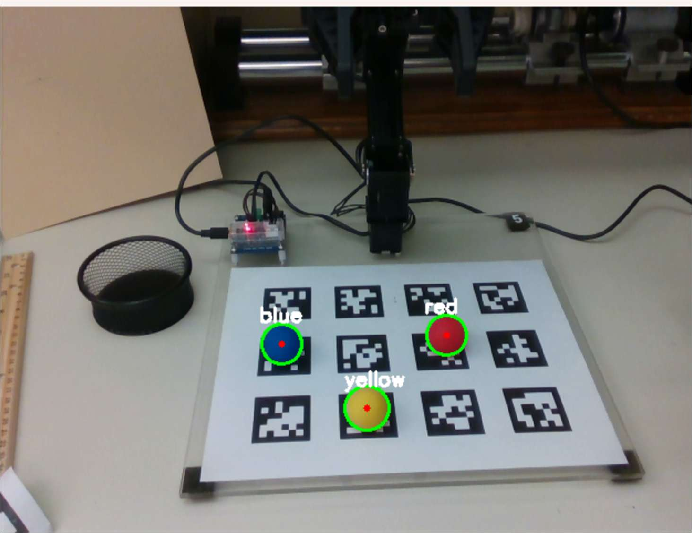
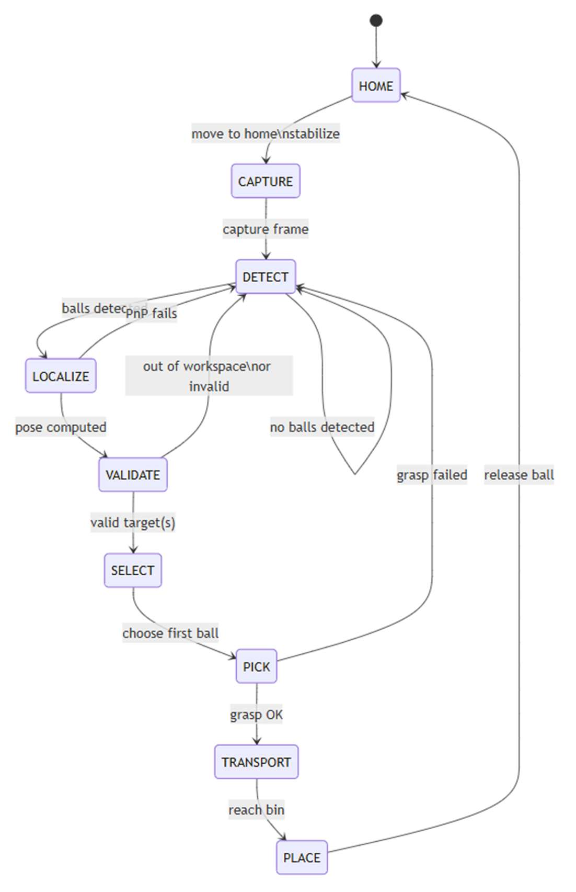

Robotics · Computer Vision · Trajectory Planning
Vision-Based Robotic Manipulator
A vision-guided pick-and-place sorting system on the OpenManipulator-X: find coloured balls, work out where they are in 3D, plan a path, pick them up, and sort them by colour.
A note on authorship
This was structured coursework. The course framework, starter code, and hardware interface classes were written by Prof. Siavash Farzan of the Cal Poly Electrical Engineering Department — the robot and camera interface classes carry his copyright header directly, and the trajectory planner shipped as a skeleton with the methods left to be filled in.
Students implemented the designated algorithm functions inside that scaffolding. What this page documents is the topics I studied and the system I got working — not a claim of having authored the surrounding codebase.
The system
Five stages, end to end.
- Detect coloured spherical objects in the camera frame.
- Estimate their 3D position relative to the robot base.
- Plan a smooth, collision-free trajectory to each one.
- Grasp the ball with the OpenManipulator-X gripper.
- Sort it into the matching colour-coded bin.
The earlier labs in the course built each piece separately — communication and position control, forward and inverse kinematics, task-space and joint-space polynomial trajectories, Jacobian-based differential motion, camera-to-robot calibration with AprilTags, and position-based visual servoing. The final lab was the one that required putting them together and making the combination hold up: detection robustness, workspace safety, error mitigation, and iterative closed-loop testing.
Perception
Finding the ball.



Demonstration
Sorting, start to finish.
Three coloured balls detected, picked, and sorted into their bins. Silent — the audio track has been removed.